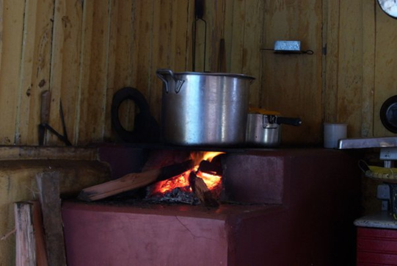

Causas da Poluição
Poluição do Ar:
Uso de veículos movidos a combustíveis fósseis, como carros e motos, que liberam gases poluenta atmosfera;
Queima de resíduos sólidos ou de madeira para aquecimento ou preparo de alimentos;

Utilização frequente de churrasqueiras a carvão em áreas residenciais sem sistemas de ventilação adequados, resultando na emissão de partículas finas e gases poluentes na atmosfera;

Utilização de geradores a diesel ou aquecedores a gás em ambientes internos sem ventilação adequada, resultando na emissão de monóxido de carbono e outros poluentes do ar.
Poluição do Solo:
Descarte inadequado de resíduos sólidos, como jogar lixo em locais inadequados, não reciclar materiais que podem ser reciclados;
Aplicação excessiva de pesticidas e herbicidas em jardins e quintais, resultando na contaminação do solo e na perda da biodiversidade;
Descarte inadequado de pilhas e baterias usadas em lixeiras comuns, levando à liberação de metais pesados tóxicos no solo;
Descarte irregular de entulhos de construção civil em terrenos baldios, causando a contaminação do solo por substâncias nocivas presentes nos resíduos de construção.
Poluição da Água:
Descarte de resíduos domésticos, como óleo de cozinha, e produtos de limpeza, em ralos ou corpos d'água;
Uso excessivo de produtos químicos em atividades domésticas, como limpeza e jardinagem, e descarte de lixo em rios, lagos ou praias;
Descarte inadequado de medicamentos vencidos ou não utilizados no vaso sanitário, resultando na contaminação da água por substâncias químicas prejudiciais;
Lavagem de veículos em ruas e calçadas sem sistemas de drenagem adequados, levando à contaminação da água por detergentes e óleos presentes na água de lavagem;
Aplicação excessiva de fertilizantes em jardins e hortas, resultando no escoamento de nutrientes em excesso para corpos d'água próximos, causando eutrofização e proliferação de algas.